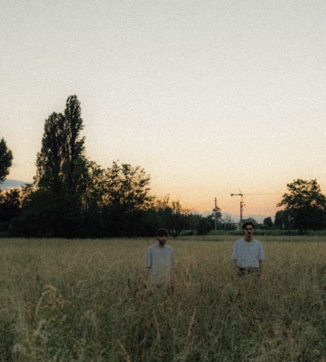
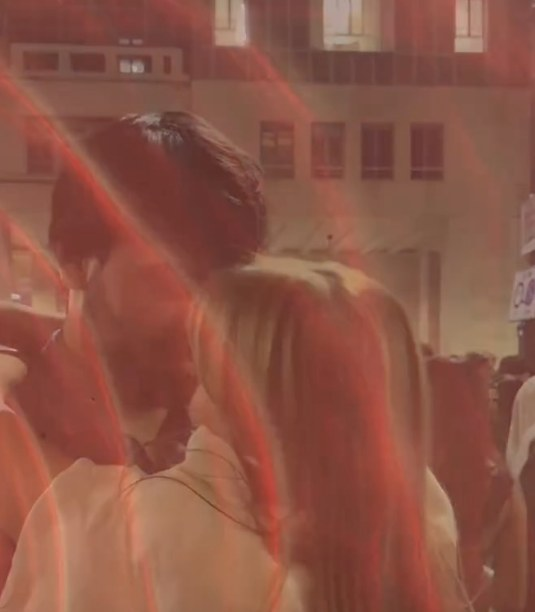
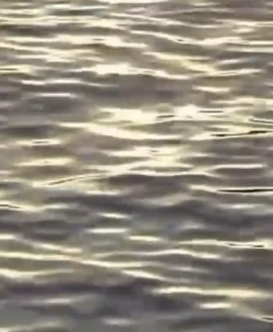
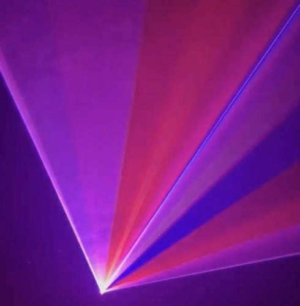
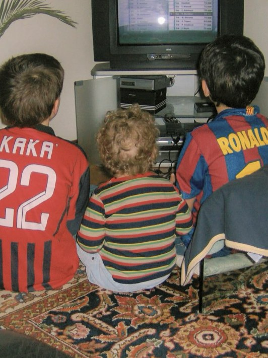
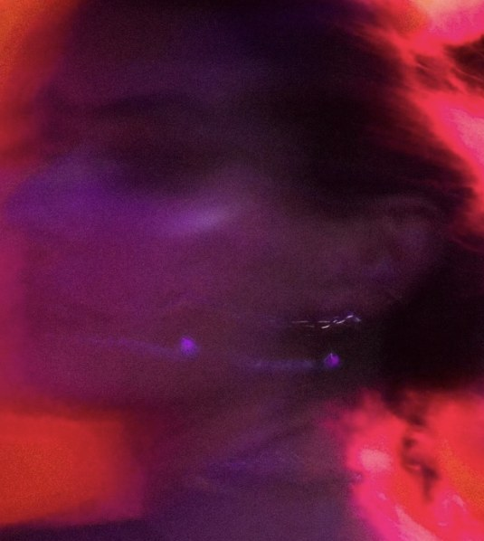
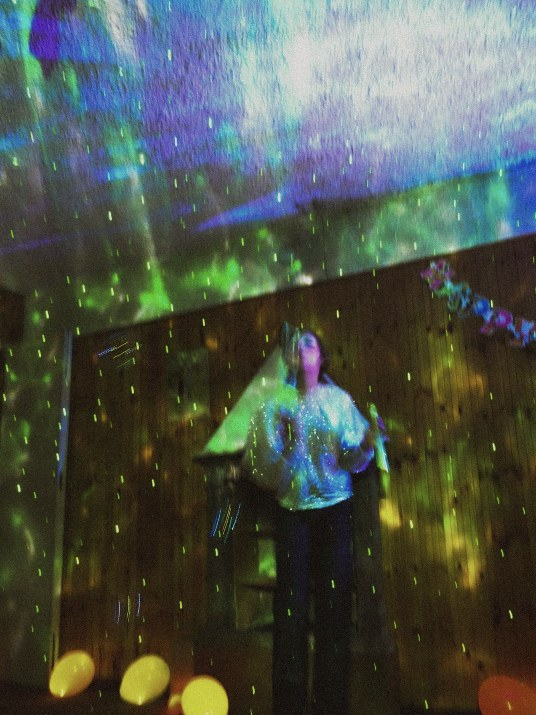
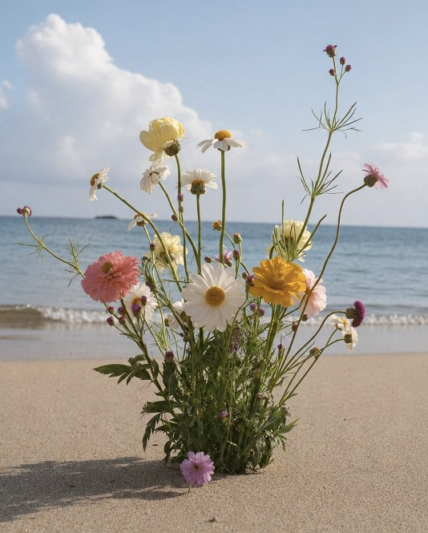
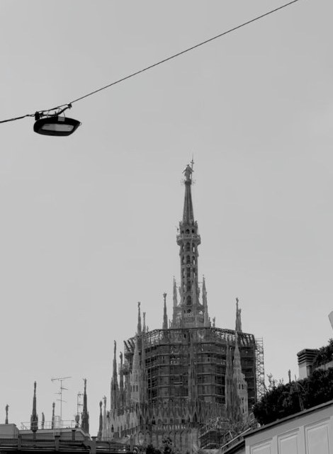

Ascolta
▶ PlayDal vivo
● Live- — — . — —Nuove date in arrivo
- AvvisiSeguici su Instagram→
Rullino
36 pose
Lucciole12A
Panico13
Estate13A
Live14
200414A
Serata 215
Live15A
Estate16
Milano16A← scorri · passa sopra per mettere a fuoco →